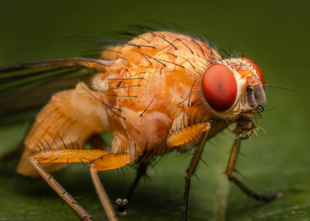

Es una mosca pequeña, de aproximadamente 2 a 3 mm de longitud, con cuerpo amarillento o marrón claro, abdomen con bandas oscuras y ojos generalmente rojos. Se encuentra frecuentemente cerca de frutas maduras o fermentadas, ya que sus larvas se desarrollan en materia orgánica en fermentación. Es ampliamente utilizada en investigaciones científicas y estudios de genética debido a su rápido ciclo de vida y facilidad de reproducción.